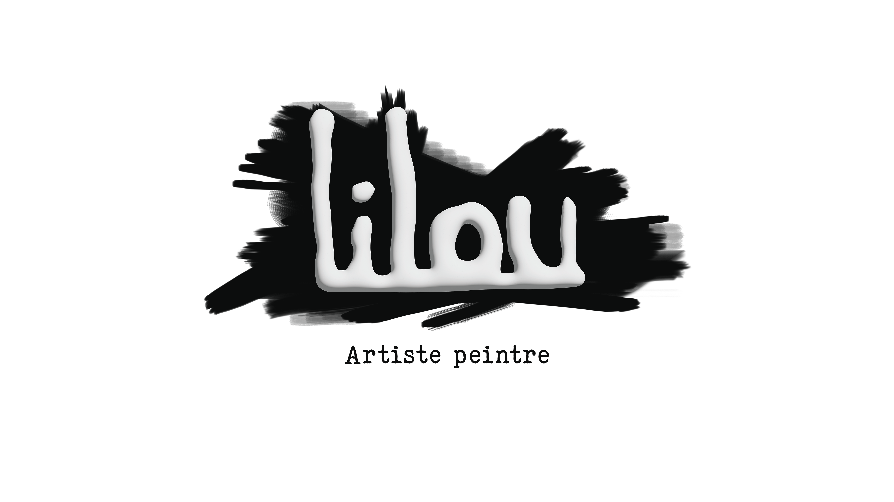

Mes Projets
Num&Boost
Présentation :
"Num&BOOST est un dispositif de formation composé d'un ensemble de modules synchrones et asynchrones, principalement mis en oeuvre en distanciel et tutorés par une équipe de formateurs-coachs.
Elle doit permettre à des publics diversifiés d'accéder aux métiers du numérique grâce à la mise en œuvre d’un parcours de formation modulaire et personnalisé."
Ce dispositif m'a apporté de plus amples connaissances sur le language HTML ainsi que CSS.
Il m'a également permis de confirmer mon choix de réorientation.
Compétences Acquises
Lors de cette formation, j'ai eu l'occasion d'acquérir/perfectionner les compétences suivantes:
-
- HTML
- Javascript
- CSS
- Administration Système
- Wordpress
Mon premier site professionnel
Au cours de ma formation, j'ai eu l'opportunité de réaliser et d'améliorer un site existant pour Lilou BECHER une jeune artiste, ce qui m'a permis de développer mes compétences en WordPress tout en répondant à des besoins concrets.
Notement, améliorer l'aspect visuel de son site.
(Le lien du site sera communiqué lorsqu'il sera terminé)

Mon premier serveur
L'administration système est un projet plus personnel que j'ai décidé de commencer il y a peu.
Premièrement, la réalisation de Deuxièmement, il me permet d'intégrer des compétence tel que :
-
- L'installation
- La configuration
- La maintenance
Deuxièmement, il me permettra d'herbeger mes sites Web, ainsi que d'autres projets personnels.